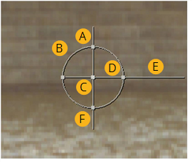

本节介绍如何使用多个参数将 2D 转换 (包括平移、旋转、缩放和倾斜) 应用于元素 Nuke 节点。
本节中讨论的几个节点显示了用于执行空间转换的查看器覆盖。这种覆盖通常是 “属性” 面板的更快的替代方案。下图显示了如何使用 Nuke 2D 转换覆盖。
|
 |
| 转换覆盖。 |
• A) 拖动以倾斜框架 (请参见 倾斜元素 )。
• B) 在 x 和 y 上同时拖动以均匀缩放帧 (请参见 缩放元素 )。
• C) 拖动以平移框架 (请参见 翻译元素 )。
转变 拖动以将平移约束为 x 或 y。
Ctrl / Cmd 拖动以重新定位枢轴点 (充当转换操作中心的点)。
• D) 拖动以在 x 上缩放帧。
• E) 拖动以围绕枢轴点旋转框架 (请参见 旋转元素 )。变换覆盖将捕捉到典型值。要防止折断，请按 转变 拖动时。
• F) 拖动以在 y 上缩放框架。
|
|